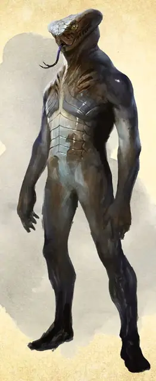

Юань-ти шепчущий в мыслях
Yuan-ti Mind Whisperer
Средний Монстр (Колдун), обычно нейтрально-злой

Класс Доспеха 14 (природный доспех)
Хиты 71 (13к8 + 13)
Скорость 30 футов
| мод | спас | ||
|---|---|---|---|
| СИЛ | 16 | +3 | +3 |
| ЛОВ | 14 | +2 | +2 |
| ТЕЛ | 13 | +1 | +1 |
| мод | спас | ||
|---|---|---|---|
| ИНТ | 14 | +2 | +2 |
| МДР | 14 | +2 | +4 |
| ХАР | 16 | +3 | +5 |
Навыки Обман +5, Скрытность +4
Иммунитет к урону яд
Иммунитет к состояниям отравление
Чувства тёмное зрение 120 футов, пассивное Восприятие 12
Языки Общий, Бездны, Драконий
Опасность 4 (1100 опыта)
Бонус мастерства +2
Среда обитания Лес, Подземье, Пустыня
Особенности
Дьявольское зрение. Магическая тьма не мешает тёмному зрению юань–ти.
Сопротивление магии. . Юань–ти имеет преимущество на спасброски от заклинаний и других магических эффектов.
Благословение Ссета. Когда юань–ти уменьшает хиты врага до 0, он получает 9 временных хитов.
Действия
Мультиатака. . Юань–ти совершает две атаки Укусом и одну атаку Скимитаром или две атаки Призрачными клыками.
Укус. . Рукопашная атака оружием: +5 к попаданию, досягаемость 5 футов, одна цель. Попадание: 5 (1к4 + 3) колющего урона плюс 7 (2к6) урона ядом.
Скимитар (только в форме юань–ти). . Рукопашная атака оружием: +5 к попаданию, досягаемость 5 футов, одна цель. Попадание: 6 (1к6 + 3) рубящего урона.
Призрачные клыки. Дальнобойная атака заклинанием: +5 к попаданию, дистанция 120 футов, одна цель. Попадание: 16 (3к8 + 3) урона психической энергией.
Использование заклинаний (только в форме юань–ти). Юань–ти накладывает одно из следующих заклинаний, используя Харизму в качестве базовой характеристики и без использования материальных компонентов (Сл спасброска от заклинаний 13):
• Неограниченно: дружба с животными [animal friendship] (только на змей), сообщение [message], малая иллюзия [minor illusion], фокусы [prestidigitation];
• 3/день: внушение [suggestion];
• 2/день каждое: обнаружение мыслей [detect thoughts], гипнотический узор [hypnotic pattern].
Бонусные действия
Перевёртыш. Юань–ти может превратиться в Среднюю змею или обратно в свою истинную форму. Его характеристики одинаковы в обеих формах. Любое снаряжение, которое он носит или несет, не превращается. Если он умирает, то остается в своей текущей форме.
Описание
Шепчущие в мыслях – проклинатели–заклинатели, которые заключили пакт с змеиным божеством Ссетом, Шипящей Смертью. Они используют свои способности, чтоб обратить других в свою веру, увеличить личную мощь и одурачить разум своих врагов.
Шепчущий в мыслях изворотлив, манипулятивен, непредсказуем, готов обмануть или убить товарищей и соперников, если это принесет ему выгоду. Поклоняющие Ссету запустили руки в много «схем», часто лавируя между двумя фракциями и тратя много энергии, чтоб ни один из их союзников не узнал про многочисленные противоречивые связи. Даже среди юань–ти шепчущие в мыслях известны как самовлюбленные, скрытные, и склонные к бегству при первых признаках неприятностей.